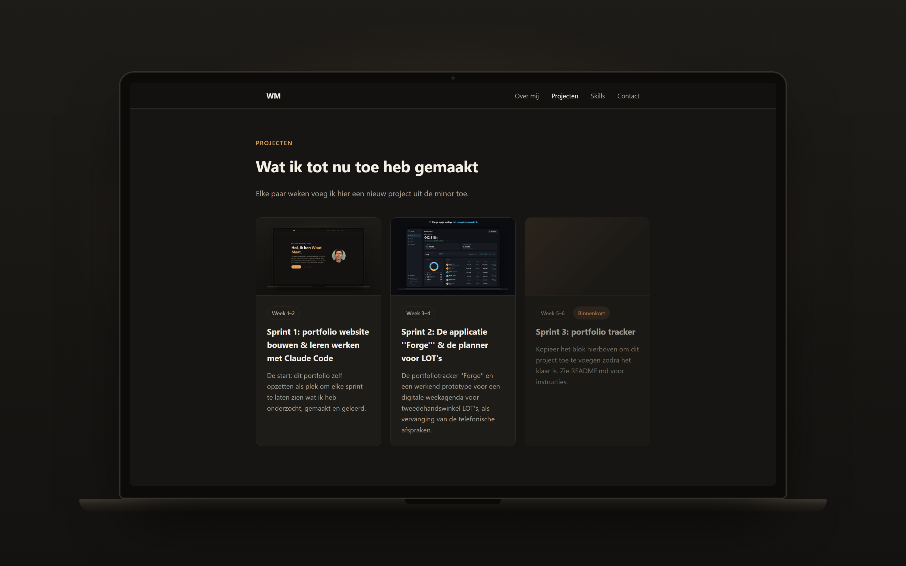
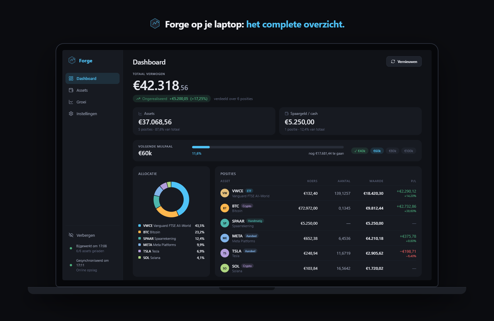

Sprint 3: portfolio tracker
Kopieer het blok hierboven om dit project toe te voegen zodra het klaar is. Zie README.md voor instructies.
Minor Future-proof met AI — 2025/2026
Vierdejaars student CMD, en dit is mijn groeiende portfolio uit de minor Future-proof met AI — waarin ik onderzoek hoe AI mijn creatieve proces kan versterken en hoe ik het kan inzetten om efficiënter te werken en slimme oplossingen te bouwen.
Over mij
Ik ben Wout Maat, vierdejaars CMD-student en momenteel bezig met de minor Future-proof met AI. In deze minor onderzoek en leer ik hoe AI het creatieve proces kan versterken: van het snel verkennen van ideeën tot het bouwen van slimme, werkende oplossingen. Daarnaast kijk ik hoe AI mij kan helpen om efficiënter te werken, zodat er meer tijd overblijft voor het echte ontwerp- en denkwerk. Op deze pagina verzamel ik de projecten en inzichten die daaruit voortkomen.
Projecten
Elke paar weken voeg ik hier een nieuw project uit de minor toe.

De start: dit portfolio zelf opzetten als plek om elke sprint te laten zien wat ik heb onderzocht, gemaakt en geleerd.

De portfoliotracker ''Forge'' en een werkend prototype voor een digitale weekagenda voor tweedehandswinkel LOT's, als vervanging van de telefonische afspraken.
Kopieer het blok hierboven om dit project toe te voegen zodra het klaar is. Zie README.md voor instructies.
Skills
Contact
Neem gerust contact op — ik hoor graag wat je van mijn projecten vindt.